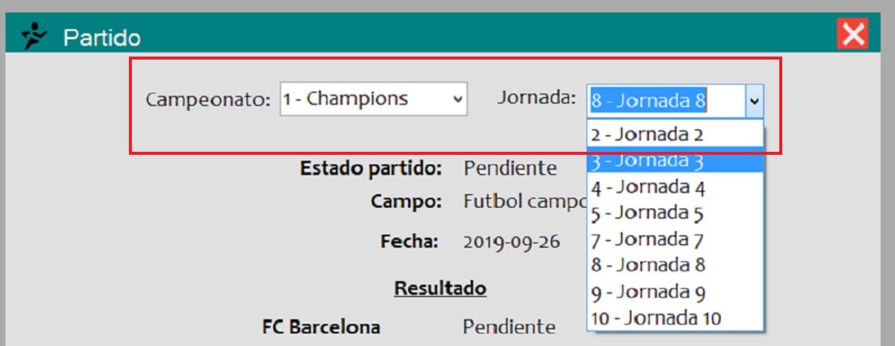

Al abrir la ventana principal del usuario (donde se muestran todas las ventanas), usted podrá observar la barra de menú en la parte superior de ésta:

Damos click en la pestaña "Mi equipo", a continuación click en la opción "Consultar Jornadas":
A continuación Podremos ver información a detalle de todos los partidos que jugó o que jugará el equipo dependiendo que jornada elijamos

Tendrá la lista de campeonatos en los que está inscrito en la esquina superior izquierda, y tendrá una lista de las jornadas del campeonato seleccionado en la esquina superior derecha de la ventana. Despliegue la lista haciendo click en la flecha indicando hacia abajo para poder visualizar todos sus campeontos o jornadas.
Desde la ventana de "Consulta de Jornadas" tenemos la opción de ir a otras ventanas las cuales pueden ser la ventana de Sanciones, donde podemos consultar todas las sanciones que ha tenido el equipo hasta la fecha actual en sus partidos; podemos ir también a la ventana de Mejores Jugadores, donde podremos visualizar la tabla de jugadores que más anotaciones han tenido en el equipo.

Los registros de los campos variarán dependiendo que equipo se elegió anteriormente en la ventana de "Selección de Equipos:"